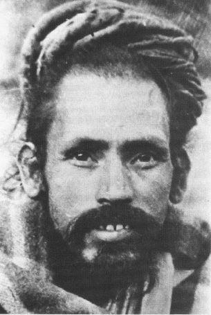
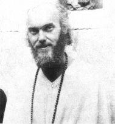
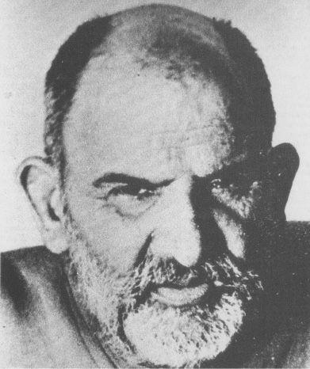
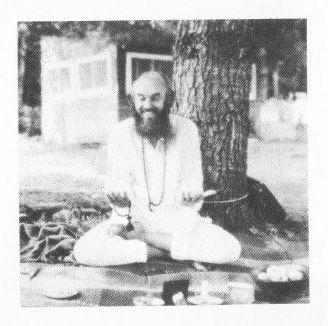

ASHTANGA YOGA
I was taken back to the temple. It was interesting. At no time was I asked, do you want to stay? Do you want to study? Everything was understood. There were no contracts. There were no promises. There were no vows. There was nothing.
The next day Maharaji instructed them to take me out and buy me clothes. They gave me a room. Nobody ever asked me for a nickel. Nobody ever asked me to spread the word. Nobody ever did anything. There was no commitment whatsoever required. It was all done internally.
This guru—Maharaji—has only his blanket. You see, he’s in a place called SAHAJ SAMADHI and he’s not identified with this world as most of us identify with it. If you didn’t watch him, he’d just disappear altogether into the jungle or leave his body, but his devotees are always protecting him and watching him so they can keep him around. They’ve got an entourage around him and people come and bring gifts to the holy man because that’s part of the way in which you gain holy merit in India. And money piles up, and so they build temples, or they build schools. He will walk to a place and there will be a saint who has lived in that place or cave and he’ll say, “There will be a temple here,” and then they build a temple. And they do all this around Maharaji. He appears to do nothing.

As an example of Maharaji’s style, I was once going through my address book and I came to Lama Govinda’s name (he wrote Foundations of Tibetan Mysticism and Way of the White Cloud) and I thought, “Gee, I ought to go visit him. I’m here in the Himalayas and it wouldn’t be a long trip and I could go and pay my respects. I must do that some time before I leave.”
And the next day there is a message from Maharaji saying, “You are to go immediately to see Lama Govinda.”
Another time, I had to go to Delhi to work on my visa and I took a bus. This was the first time after four months that they let me out alone. They were so protective of me. I don’t know what they were afraid would happen to me, but they were always sending somebody with me . . . They weren’t giving me elopement privileges, as they say in mental hospitals.
But they allowed me to go alone to Delhi and I took a 12 hour bus trip. I went to Delhi and I was so high. I went through Connaught Place. And I went through that barefoot, silent with my chalkboard—I was silent all the time. At American Express, writing my words it was so high that not at one moment was there even a qualm or a doubt.

So after all day long of doing my dramas with the Health Department and so on, it came time for lunch. I had been on this very fierce austere diet and I had lost 60 lbs. I was feeling great—very light and very beautiful—but there was enough orality still left in me to want to have a feast. I’ll have a vegetarian feast, I thought. So I went to a fancy vegetarian restaurant and I got a table over in a corner and ordered their special deluxe vegetarian dinner, from nuts to nuts, and I had the whole thing and the last thing they served was vegetarian ice cream with 2 english biscuits stuck into it. And those biscuits . . . the sweet thing has always been a big part of my life, but I knew somehow, maybe I shouldn’t be eating those. They’re so far out from my diet. It’s not vegetables—it’s not rice. And so I was almost secretly eating the cookies in this dark corner. I was feeling very guilty about eating these cookies. But nobody was watching me. And then I went to a Buddhist monastary for the night and the next day took the bus back up to the mountain.
Two days later, we heard Maharaji was back—he had been up in the mountains in another little village. He travels around a lot, moves from place to place. I hadn’t seen him in about a month and a half—I didn’t see much of him at all. We all went rushing to see Maharaji and I got a bag of oranges to bring to him and I came and took one look at him, and the oranges went flying and I started to cry and I fell down and they were patting me. Maharaji was eating oranges as fast as he could, manifesting through eating food the process of taking on the karma of someone else.
Women bring him food all day long. He just opens his mouth and they feed him and he’s taking on karma that way. And he ate eight oranges right before my eyes. I had never seen anything like that. And the principal of the school was feeding me oranges and I was crying and the whole thing was very maudlin, and he pulls me by the hair, and I look up and he says to me, “How did you like the biscuits?”
I’d be at my temple. And I’d think about arranging for a beautiful lama in America to get some money, or something like that. Then I’d go to bed and pull the covers over my head and perhaps have a very worldly thought; I would think about what I’d do with all my powers when I got them; perhaps a sexual thought. Then when next I saw Maharaji he would tell me something like, “You want to give money to a lama in America.” And I’d feel like I was such a beautiful guy. Then suddenly I’d be horrified with the realization that if he knew that thought, then he must know that one, too . . . ohhhhh . . . and that one, too! Then I’d look at the ground. And when I’d finally steal a glance at him, he’d be looking at me with such total love.
Now the impact of these experiences was very profound. As they say in the Sikh religion—Once you realize God knows everything, you’re free. I had been through many years of psychoanalysis and still I had managed to keep private places in my head—I wouldn’t say they were big, labeled categories, but they were certain attitudes or feelings that were still very private. And suddenly I realized that he knew everything that was going on in my head, all the time, and that he still loved me. Because who we are is behind all that.
I said to Hari Dass Baba, my teacher at the time, “Why is it that Maharaji never tells me the bad things I think?”, and he says, “It does not help your sadhana—your spiritual work. He knows it all, but he just does the things that help you.”

The sculptor had said he loved Maharaji so much, we should keep the Land Rover up there. The Land Rover was just sitting around and so Maharaji got the Land Rover after all, for that time. And then one day, I was told we were going on an outing up in the Himalayas for the day. This was very exciting, because I never left my room in the temple. Now in the temple, or around Maharaji, there were eight or nine people. Bhagwan Dass and I were the only westerners. In fact, at no time that I was there did I see any other westerners. This is clearly not a western scene, and in fact, I was specifically told when returning to the United States that I was not to mention Maharaji’s name or where he was, or anything.
The few people that have slipped by this net and figured out from clues in my speech and their knowledge of India where he was and have gone to see him, were thrown out immediately . . . very summarily dismissed, which is very strange. All I can do is pass that information on to you. I think the message is that you don’t need to go to anywhere else to find what you are seeking.
So there were eight or nine people and whenever there was a scene, I walked last. I was the lowest man on the totem pole. They all loved me and honored me and I was the novice, like in a karate or judo class, where you stand at the back until you learn more. I was always in the back and they were always teaching me.
So we went in the Land Rover. Maharaji was up in the front—Bhagwan Dass was driving. Bhagwan Dass turned out to be very high in this scene. He was very very highly thought of and honored. He had started playing the sitar; he was a fantastic musician and the Hindu people loved him. He would do bhajan—holy music—so high they would go out on it. So Bhagwan Dass was driving and I was way in the back of the Land Rover camper with the women and some luggage.
And we went up into the hills and came to a place where we stopped and were given apples, in an orchard and we looked at a beautiful view. We stayed about 10 minutes, and then Maharaji says, “We’ve got to go on.”
We got in the car, went further up the hill and came to a Forestry camp. Some of his devotees are people in the Forestry department so they make this available to him.
So we got to this place and there was a building waiting and a caretaker—“Oh, Maharaji, you’ve graced us with your presence.” He went inside with the man that is there to take care of him or be with him all the time—and we all sat on the lawn.”
After a little while, a message came out, “Maharaji wants to see you.” And I got up and went in, and sat down in front of him. He looked at me and said,
“You make many people laugh in America?”
I said, “Yes, I like to do that.”
“Good . . . You like to feed children?”
“Yes. Sure.”
“Good.”
He asked a few more questions like that, which seemed to be nice questions, but . . . ? Then he smiled and he reached forward and he tapped me right on the forehead, just three times. That’s all.
Then the other fellow came along and lifted me and walked me out the door. I was completely confused. I didn’t know what had happened to me—why he had done it—what it was about.
When I walked out, the people out in the yard said that I looked as if I were in a very high state. They said tears were streaming down my face. But all I felt inside was confusion. I have never felt any further understanding of it since then. I don’t know what it was all about. It was not an idle movement, because the minute that was over, we all got back in the car and went home.
I pass that on to you. You know now, what I know about that. Just an interesting thing. I don’t know what it means, yet.
Hari Dass Baba was my teacher. I was taught by this man with a chalkboard in the most terse way possible. I would get up early, take my bath in the river or out of a pail with a lota (a bowl). I would go in and do my breathing exercises, my pranayam and my hatha yoga, meditate, study, and around 11:30 in the morning, this man would arrive and with chalkboard he would write something down:
“If a pickpocket meets a saint, he sees only his pockets.”
Then he’d get up and leave. Or he’d write,
“If you wear shoeleather, the whole earth is covered with leather.”
These were his ways of teaching me about how motivation affects perception. His teaching seemed to be no teaching because he always taught from within . . . that is, his lessons aroused in me just affirmation . . . as if I knew it all already.
When starting to teach me about what it meant to be ‘ahimsa’ or non-violent, and the effect on the environment around you of the vibrations—when he started to teach me about energy and vibrations, his opening statement was “Snakes Know Heart.” “Yogis in jungle need not fear.” Because if you’re pure enough, cool it, don’t worry. But you’ve got to be very pure.
So his teaching was of this nature. And it was not until a number of months later that I got hold of Vivekananda’s book “Raja Yoga” and I realized that he had been teaching me Raja Yoga, very systematically—an exquisite scientific system that had been originally enunciated somewhere between 500 BC and 500 AD by Patanjali, in a set of sutras, or phrases, and it’s called Ashtanga Yoga, or 8-limbed yoga—and also known as Raja or Kingly yoga. And this beautiful yogi was teaching me this wisdom with simple metaphor and brief phrase.
Now, though I am a beginner on the path, I have returned to the West for a time to work out karma or unfulfilled commitment. Part of this commitment is to share what I have learned with those of you who are on a similar journey. One can share a message through telling ‘our-story’ as I have just done, or through teaching methods of yoga, or singing, or making love. Each of us finds his unique vehicle for sharing with others his bit of wisdom.
For me, this story is but a vehicle for sharing with you the true message . . . the living faith in what is possible.

–OM–